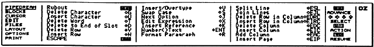

BRE
BREThis section describes all of the PipeDream commands that are available in each menu. To understand this chapter, you should already be familiar with the basic concepts of using PipeDream described in Section Two - Using PipeDream.
All commands can be typed directly from the keyboard, as well as chosen from the appropriate menu. The keyboard equivalent for each command is shown to the right of the command name in the menu. For example, the Replicate command on the BLOCKS menu appears as
Replicate BRE
This means that you can give the Replicate command by
typing
the key
followed by the keys B R E.
Note that the letters do not need to be in
capitals:
b r e has the same effect. Also, you can hold down
the
key while typing the letter keys if you prefer.
When, as in this example, the command equivalent is a sequence
of two
or three letters, the first letter will usually be the first letter of
the menu name. For frequently-used commands, the key equivalent is a
single letter with the key (in
a very few cases the  key). For
example, the Mark Block
command on the BLOCKS
menu has the equivalent Z.
key). For
example, the Mark Block
command on the BLOCKS
menu has the equivalent Z.
Note that in the following screen diagrams the highlighting bar has been omitted for clarity.
Some commands present you with a table of options which allow you to set up the command to your requirements.
To begin with, the cursor is positioned next to the first option; the cursor keys can be' used as normal to move up and down the list.
Many of the options have only two possible alternatives: Yes
and No.
You can change the value shown either by typing Y
or N as appropriate,
or by using the Next Option
command, J, which
alternates between
the
available values. In the case of options which take specific values,
such as Page Length, Next
Option restores the default value.
The commands on the BLOCKS menu enable you to manipulate documents to control exactly which areas are affected by a particular operation. A block can include anything from a single slot to a complete document.
Before giving any block command you identify the slots you wish to operate on using the Mark Block command. You can mark a single slot, a row of slots, a column of slots, or a rectangular block of slots spanning several rows and columns.
You identify which block of slots you want to operate on by giving the Mark Block command at the top left-hand corner and bottom right-hand corner of the block. After giving the two Mark Block commands, all the selected slots in the block will be shown highlighted on the screen.
ZMarks a single slot, or the top left-hand corner and bottom right-hand corner of a rectangular block of slots, to identify the slots to be operated on by subsequent block commands.
QClears any marked block previously set up with the Mark Block command.
BREReproduces the contents of a slot, or block of slots, in any part of the document. The following options are displayed:
Range to copy from
Range to copy to
Each range is a block of slots identified by specifying the coordinates of its top left-hand corner and bottom right-hand corner. If necessary, extra rows and/or columns are created in the document to accommodate the new slots.
The ranges can be one of the following forms:
1. Single slot to area
Range to copy from: a single slot, eg A1.
Range to copy to: an area, eg B3 D7, or just a row
or column range. The
area can include the original slot, if required.
The contents of the slot are copied over the entire area, as represented symbolically in the following diagram:
2. Column to area
Range to copy from: a column array, eg A1
A3.
Range to copy to: a single slot or a row array, eg
B5 D5.
The column is copied to the target column starting at either the single slot, or the range of slots given by the target row.
3. Row to area
Range to copy from: a row array, eg A1C1.
Range to copy to: a single slot or a column array,
eg B5 B7.
The row is copied to the target row, starting either at the single slot or at the range of slots given by the target column, as shown on the following page:
4. Area to area
Range to copy from: an area, eg A1 B2.
Range to copy to: a single slot,
eg C5.
The area is copied to the area with the top left-hand corner defined by the single slot.
If the slots contain slot references, the references are updated to take account of their altered position, unless they are fixed with the $ operator.
BCCopies a marked block of slots to the position in the document indicated by the cursor. Slots in the document will be moved apart to make space for the block being copied, in contrast with the Replicate command which overwrites the target area.
Slot references in the new block are updated as for the Replicate command, but references to slots within the block are not altered.
BMMoves a marked block of slots from its original position to the position indicated by the cursor. All slot references are updated as appropriate.
Note that if you attempt to move a block of slots to a new position which overlaps the same rows or columns as the original block, the error
Overlap
will be displayed.
BDDeletes a marked block of slots from the document. Since you will lose the information previously in those slots, it is a good idea to save a copy of your document before deleting a large area, so that you can revert to this if you accidentally delete valuable information.
BSOSorts a marked block of slots. Text slots are sorted into alphabetical order, expression slots into numeric order, and date slots into date order. The following options are displayed:
Sort on column
Sort in reverse order
No
Don't update references
No
Sort on column: set to a column label (A, B, C etc) to specify which column within the marked block should be used to determine the ordering of the slots.
Sort in reverse order: by default, the marked block is sorted into ascending order, and any slot references are updated as appropriate. Setting this option to Yes will sort the specified column in descending order.
Don't update references: setting this option to Yes inhibits the updating of slot references within the block being sorted. This gives a faster sort operation, and can be used provided no slots within the sorted block are referred to either from within or from outside the sorted block.
BSESearch is for a specified string within a single document, or a multi-file document. The following options are available:
String to search for
Search only range of columns
No
Equate upper and lower case
Yes
Search only
marked block No
Search from current file
No
Search all files in list
No
The string to be searched for is specified in the same way as for the Replace command, and the equivalent options have the same effect; see below.
When the search is completed, a message such as
27 found
will be displayed where 27 is the number of matches since the last Search command.
BNMFollowing a Search command, the Next match command can be used to find the next occurrence of the specified string starting at the current cursor position.
BRPSearches for and replaces occurrences of one specified string by another. The following options are displayed:
String to search for
Replace with
Search only range of columns
No
Equate upper and lower case
Yes
Ask for
confirmation
Yes
Search only marked block
No
Search all files in list
No
By default, the Replace command replaces all occurrences of the first specified string with the second specified string throughout the current document, equating upper- and lower-case letters and prompting for confirmation before each replacement. For example
String to search for
Cat
Replace with
Dog
will replace Cat with Dog, cat with dog, and CAT with DOG.
On each occurrence of the search string, the prompt
Replace: N, Y?
will be displayed at the top of the screen. Answer Y to perform the replacement, N to proceed to the next occurrence of the search string, or press the ESC key to cancel the command. When the command is completed, the message
27 found
(or as appropriate) will be displayed to show the total number of replacements that have been made.
String to search for: specifies the search string, which can be up to 240 characters in length.
Certain special sequences of characters can be used in the search string to represent characters which cannot be typed at the keyboard, or classes of search string:
| Sequence | Matches |
| ^1..^8 ^^ ^? ^# ^S ^Rref ^R# space ^B |
Highlight character ^ A single character – not space Any number of non-space characters (ie a word) A space Slot reference ref Any slot reference One or more spaces, or across slots Beginning of a slot (or line) |
Replace with: specifies the string to replace each occurrence of the search string. The following special sequences of characters can be used:
| Sequence | Substitutes |
| ^1..^8 ^^ ^?n ^#n ^S ^Rref ^R#n space |
Highlight character ^ Character matching nth ^? in search String matching nth ^# in search A space Slot reference ref Slot reference matching nth ^R# Matching spaces or slot boundary |
Up to nine ^? fields, nine ^# fields and nine ^R# fields, numbered 1 to 9, can be used in the same replace string.
The ^# wild field will match zero characters, as long as the string which has been searched for contains at least one character (otherwise the wild field would match all spaces).#
The sequences ^1 to ^8 represent highlight codes 1 to 8. For example, all occurrences of PipeDream could be put into bold with the options
String to search for
PipeDream
Replace with
^2PipeDream^2
The sequence ^B forces the search string to start at the beginning of a line. For example, all single spaces could be removed from the beginnings of lines with the options
String to search for
^B^S
Replace with
The sequence ^# will match a sequence of characters not containing a space; ie a word, or a number. For example, to strip line numbers from spooled BASIC programs:
String to search for
^B ^#
Replace with
^S
Where ^# or ^? have been used to search for any words or characters, the words or characters that were found can be inserted in the Replace with string using ^#1 to ^#9, or ^?1 to ^?9 respectively. For example,
String to search for
c^?r^?
Replace with
^?2^?1ck
will change cart to tack and cord to dock.
The sequence ^Rref and ^R# respectively match a specific slot reference, and any slot reference, in an expression slot. Thus,
String to search for
^R#
Replace with
^R#1+1
will replace all slot reference A1 by A1+1, and so on.
Search only range of columns: enables you to specify a column range by entering a pair of column labels separated by a space: eg A G. The command is then restricted to the specified range of columns, inclusive.
Equate upper and lower case: by default, upper- and lower-case letters are treated as equivalent in the search string and the cases of letters in the replace string are altered to match the cases of the letters in corresponding positions of the matched string. Setting this option to No forces matches to be identical case. This means that, for example, specifying Dog to replace Cat will have no effect on cat or CAT.
Ask for confirmation: setting this option to No causes all strings to be replaced without prompting.
Search only marked block: setting this option to Yes restricts the search to a marked block of slots.
Search from current file: setting this option to Yes performs the search and replace operation throughout a multi-file document, starting at the top of the current file.
Search all files in list: setting this option to Yes performs the search and replace operation throughout a multi-file document, starting at the top of the first file. See Multi-file documents, p. 125.
BWC Counts the words in the whole document, or in a block of slots if one has been marked, and displays the number of words, for example
127 words
at the top of the screen. Note that numbers and other symbols separated by spaces will contribute towards the word count.
BNEWClears the entire document. The query
Overwrite text?
is given. If you clear the document (by answering Yes), this will cancel all file names and multi-file mode, resetting the Options Page options to their defaults, and resetting the screen display to its starting state of six columns, each 12 characters wide.
ARecalculates all expression slots throughout the entire document. The order of recalculation is determined by the columns/rows Options Page setting.

The commands on the CURSOR menu aim to provide the greatest possible flexibility for moving around a document. Because they are used so frequently, many of them have simple shorthand equivalents, which can save you a lot of time.
You can move to the left or right a character, word, or column at a time, or to the start or end of a slot, or to the first or last column.
You can move up or down the document a row at a time, a screenful at a time, or to the top or bottom of the column.
You can also go directly to a specified slot by giving its coordinates.
The commands on the CURSOR menu do not modify the document in any way, with the exception of the ENTER command which will add a blank row at the bottom of the document if the cursor was previously at the bottom of the document.
CGSMoves the cursor directly to a specified slot. After the prompt
Go to slot
type the coordinates of the slot you want to move to, followed by ENTER. If the slot you specify is off the document, the cursor will be moved as far as possible in the direction of the specified slot.
CSPSaves the cursor position of the line containing the cursor in PipeDream. If you move to a new position, you can jump back to the previous position with the Restore Position command. Up to five positions can be saved.
CRPMoves the cursor to the last position saved. If five positions have already been saved, the Save Position command will give a bleep warning.


Moves the cursor to the next character in the slot, or the previous character in the slot respectively. Cursor Left will have no effect once the cursor reaches the beginning of the slot. Cursor Right will continue to move the cursor beyond the end of the slot, scrolling the slot left if it reaches the wrap point for the column.
Moves the cursor to the first character of the next word in the slot, and the previous word in the slot respectively. If there are no more words in the current slot, Next Word will move the cursor to the first character of the next slot. Likewise, if the cursor is at the beginning of a slot, Previous Word will move the cursor to the end of the previous slot.
Moves the cursor to the first character position in the slot.
Moves the cursor to the position after the last character in the slot.
Moves the cursor down to the next row and to the first character position in the current column. If the cursor is at the bottom of the document, the command will add an extra row to the document.


Moves the cursor to the same horizontal position in the previous line and the next line respectively: the cursor remains in the current column. Cursor Up will have no effect if the cursor is already on the top line of the document, and Cursor Down will have no effect if the cursor is already on the bottom line of the document.
Moves the cursor up or down a screenful at a time. With borders displayed this will be five lines at a time.
Moves the cursor to the top or bottom of the current column in the document respectively.
CFC or TABCLCThese commands move the cursor to the first or left-most column on the document, and last or right-most column on the document respectively. The cursor stays in the same row, but will be moved to the first (left-most) character position in the specified column.
Moves the cursor to the next column on the right, or the previous column on the left, respectively. The cursor remains in the same row, but moves to the beginning of the slot in the new column.

The commands on the EDIT menu provide for various modifications on the contents of document. In the first place, there are commands which allow you to delete a character, word, slot, row or column on the document.
You can also insert a row or a column, join two slots or split a slot, and insert a page break.
Some of these commands are especially useful when working with multi-column documents: see Widths and margins in a multi-column document, p. 129.
The remaining commands are divided into two groups; the first applies specifically to working with text, the second to working with expression slots:
Format Paragraph reformats a paragraph of text within a column, Swap Case swaps the case of a single character, and Insert/Overtype changes PipeDream between Insert and Overtype text entry modes.
Edit Expression allows you to enter an expression, Number to Text converts between an expression slot and a text slot and Insert Reference inserts a slot reference into an expression.
VSwitches the text entry mode between Insert and Overtype. The mode currently selected is displayed on the top line of the Options Page.
In Insert mode, characters typed are inserted at the cursor position, and subsequent text on the line moves apart to make space.
In Overtype mode, characters type over any text previously on the same line, in the same way as a correcting typewriter works.
The mode you choose to work in is a matter of personal preference. The selected mode is specific to each PipeDream suspended activity; the default mode can be set in the Panel.
The Rubout command, normally used by pressing the DEL key, deletes to the left. Then DEL key is used to remove a mistake in the line you have just typed. In Insert mode the remaining characters on the line move one position to the left. Note that DEL will not jump back to the previous line when the left-hand margin of a page is reached.
G or SHIFT DELDeletes to the right. You would normally use the Delete Character command to delete one or more characters in the middle of a line of text.
UInserts a space at the cursor position, leaving the cursor where it is and moving subsequent text on the line to the right. The Insert Character command is used when working in Overtype mode, to create spaces in which to insert additional text within a line.
TDeletes all the characters from the current cursor position, up to but not including the first character of the next word. Normally you would position the cursor at the beginning of the word you want to delete, using the Next Word and Previous Word commands, and then give the Delete Word command to delete everything up to the next word. Note that Delete Word will not delete beyond the end of the current slot.
DDeletes all characters from the current cursor position to the end of the slot.
SChanges the case of the character under the cursor, and moves the cursor one position to the right.
EDRCDeletes the slot containing the cursor and closes up the gap, so that subsequent rows in the current column move up on the document. This command will typically be used when PipeDream is operating in Columns mode, so that the text in the current column does not have to remain aligned with the text in adjacent columns.
EIRCInserts a row in the column containing the cursor. Subsequent rows in the current column are moved down to make space. The Insert Row in Column command is typically used when working in Columns mode, as it does not affect the text in columns to either side of the column containing the cursor. It is also useful for restoring the alignment of a table containing items in different columns.
EJLJoins the text in the line below the current line onto the end of the current line, and closes up the gap so that subsequent slots in the current column are moved up one row.
ESLSplits the current line at the cursor position. The character at the cursor position and subsequent characters are moved to the next row and the cursor remains at the end of the current slot.
RReformats text from the line containing the cursor to the end of the paragraph. The lines of text will be split at the last space before the right-hand margin for the current column; see Starting PipeDream, p. 36. If justification has been selected, with the Options Page Justify option (see p. 136), additional spaces will be added to each line to make the right-hand end always coincide with the wrap point. The end of the paragraph is determined by one of the following:
A line beginning with at least one space
An expression slot
A slot with alignment other than free align; in other words, left align, right align or LCR align.
You can prevent words from being split at a space by
typing space,
which is called an 'exact space' and is displayed on the screen
as '...'. For example,
27 ...KHz
Y
or DELDeletes the row containing the cursor across the entire document, closing up the gap. This command should be used with care, since the slot in every column on the current row will be deleted. The command is typically used when PipeDream is operating in Rows mode, in order to maintain alignment between text in adjacent columns.
EDCDeletes the column containing the cursor. Note that all information in the column will be lost, so use this command with caution.
EIPNormally, page breaks are inserted automatically by PipeDream. These are called 'soft' page breaks, and are represented by a horizontal line
^^^^^^^^^^^^^^^^^^^^^^^^
across the document between two rows. Their position will change if you alter the amount of text on a page, or change the margin settings on the Options Page.
However, to force a page break to occur at a specific place in the document, such as before a new chapter, you can insert a 'hard' page break with the Insert Page command. Hard page breaks are displayed as a row on the document
~~~~~~~~~~~~~~~~~~~~~~~~
Using this command will insert a hard page break in the row containing the cursor. The command gives the prompt
Specify no. of unbroken lines No
Pressing ENTER executes the command, thereby ensuring that subsequent text will always start at the top of a new page.
Alternatively, altering the option to Yes followed by a number enters a conditional hard page break. This means that a page break win occur if less than the specified number of lines is available on the current page. For example, before a table of ten lines one might insert a conditional hard page break with a value of 10 to ensure that all ten lines of the table were on the same page.
If the conditional hard page break does not cause a page break, it will be displayed in column A as:
~n
NInserts a blank row across the entire document before the row containing the cursor. Subsequent rows are moved down to make space. The Insert Row command is typically used when working in Rows mode (see the Options Page), since it maintains alignment between text in adjacent columns.
EICInserts a blank column to the left of the column containing the cursor. The new column is created with an initial width of 12 characters, and an initial wrap-width of zero. The cursor remains in the new column.
EACAdds a blank column at the right-hand side of the document. The new column is added with an initial width of 12 characters, and a wrap-width of zero so that text in the new column will wrap at the right-hand edge of the column.
KEnables expressions to be built up by indicating, or 'pointing
to',
various slots to which an expression will refer. It inserts the
coordinates of the slot containing the cursor into the expression being
edited. To perform the command, move the block cursor to the required
slot using the cursor keys, and type K.
If an expression is not being edited, this command will have no effect.
XSets the slot containing the cursor to an expression slot, or edits an existing expression slot.
The slot is highlighted, and the cursor moves to the editing line above the top border at the centre of the screen. The current contents of the slot, if any, are displayed, and they can be edited using the cursor keys and line editing commands:
| DEL SHIFT DEL VUTDK,SHIFT , SHIFT
, |
Rubout Delete character Insert/Overtype Insert character Delete word Delete to end of slot Insert reference Cursor left/Cursor right Previous word/Next word Beginning of line/End of line |
Finally press ENTER to enter the expression into the slot and display its value, or ESC to leave the slot's previous value unaltered.
Exits from the Options Page, or from the options of any PipeDream command. ESC will also abandon the editing of an expression and leave the contents of the slot being edited unchanged.
ENTConverts the slot containing the cursor between an expression slot and a text slot. This command allows a number inadvertently entered as text to be converted to an expression, or the equation in an expression slot to be displayed as text so that it can be printed out.
The following procedure can be used to display, or print out, all the expressions within a particular area of a spreadsheet or document:
ENT.
Expression slots within the marked block will
display
the expressions they contain. Note that text slots will display the
error Typing error.Q to
clear the marked block, and, if necessary,
increase the
column widths so that the full expressions can be seen.The commands on the FILES menu allow you to load documents from the Cambridge Z88 filing system, and save documents to the filing system.
You can create a document consisting of several files linked together by a List file. Commands are available to move to the next file or previous file, or go directly to the first file or last file in a multi-file document.
For simple use of PipeDream you do not need to use files, since you can leave documents you are working on as suspended applications. However, since there is a small overhead in keeping suspended applications, saving a large number of small documents as files will prevent the inconveniences of memory low conditions.
When you start PipeDream with a blank document, the document will have no File name associated with it, and it will show:
File No File
at the top right-hand side of the Options Page. A File name can be given to a document with the Name command. Loading a file, with the Load command, will set the File name to the name of the loaded file.
The File name of the document is displayed in the Options Page, and is used as the default file name in the options for the Save and Name commands. The File name is also used to label PipeDream suspended activities, in the Index YOUR REF. column.
FCSets the File name for the current document. Gives the prompt:
New name of file
The current File name, if any, will be displayed; this should be edited to the new name, followed by ENTER.
FLLoads a document of a given name from the filing system. The following options are displayed:
Name of file to load
Insert at slot
No
Limit to range of rows
No
Load as plain text
No
Name of file to load: specifies the file name. If a file of the same name but with the extension'.L' exists, this file is taken as a List file; see Multi-file documents, p. 125. If not, the specified file is loaded.
The File name, displayed in the Options Page, will be set to the name of the file loaded. In the case of a multi-file document, this will be the name of the current document, not the name of the List file.
Instead of typing the file name, the file can be selected from
the
Filer. After typing FL, call
the Filer by typing F, and
select the
required document using the cursor keys followed by ENTER (see
Selecting files, p. 85). You can then
return to PipeDream from the
Filer by pressing ESC,
and the full file name will have been entered
for you. Press ENTER
to load the file.
If the document in memory has been altered since last saving it, the message
Overwrite text?
will be displayed, and the document will only be loaded if Y (or y) is typed. If the document is too large to fit into memory, only the first section will be loaded, and the display will show the message
Memory full
Insert at slot: appends the file to the document already in memory, either at the specified slot reference, or at the current cursor position if no slot reference is specified. Type Y for the option
Insert at slot Yes
and enter a slot reference.
Limit to range of rows: enables files too large for the available memory to be edited by splitting them up into sections. If the option is set to Yes, a range of rows can be entered as two numbers separated by a space. Only rows lying between the specified range, inclusive, will be loaded.
Load as plain text: if Yes is specified, the file is interpreted as plain text. Sections of text on each line separated by tabs are put into successive columns across each row of the PipeDream document.
After loading a document, expression slots are recalculated twice, once to obtain the correct values of constant slots, and then again to ensure that references to constant slots have the correct values. If the document contains complicated forward referencing, it may need further recalculation before the values of slots stabilise.
FSIf none of the options are changed, pressing ENTER saves the whole of the current document to the name last set by the Load or Name commands.
The following options are displayed:
Name of file to
save
Save only range of columns
No
Save selection of rows
No
Save marked block
No
Save plain text
No
Name of file to save: by default, the current File name is displayed, as shown in the Options Page. This can be edited to save the document under a different name.
Save only range of columns: altering this option to Yes allows you to specify a range of columns. This should be given as two column labels, separated by a space: for example, A F. Only the text within the range of columns, inclusive, will be saved.
Save selection of rows: altering this option to Yes allows you to enter an expression. Only rows for which the expression evaluates to TRUE will be saved.
For example, column E in an inventory of goods may represent the quantity of each item in stock. To save a copy of the database which excluded out-of-stock items, you would type
Save selection of rows Yes E1>0
All row references in the expression are incremented before the expression is evaluated for each row in the document. So in this example row 6 will be saved if E6>0.
Save marked block: altering this option to Yes specifies that only the marked block of text should be saved.
Save plain text: altering this option to Yes will save the document as a plain text file, containing no special constructs. The contents of each successive column will be output separated by tab characters, with each row terminated by a return character.
Documents comprised of several different files can be edited and printed as a single document by means of a PipeDream List file
The List file is a plain text file containing the names of all the files making up the entire document. It should be saved with the Save plain text option, with each file name on a separate line.
The List file should be given a name with the extension'.L'. A file with extension'.L' is taken as a List file when loading, and the first document in the list will be loaded.
Any error which occurs during the processing of a multi-file document cancels the multi-file mode after reporting the error, to avoid overwriting files with incorrect text.
The following commands provide a convenient way of moving between files in a multi-file document:
FN Loads the next file in a multi-file document, but first saves the current file if it has been altered since the last save command.
FP Loads the previous file in a multi-file document. The current document is saved if it has been altered since last saving it.
FTLoads the first file in a multi-file document. The current document is first saved if it has been altered since last saving it.
FBLoads the last document in a multi-file document. The current document is first saved if it has been altered since last saving it.
For example, first create a List file in PipeDream, containing the following text:
Take care not to add any blank lines after the last file name.
Then
save this as a plain text file called book.L,
by typing FS book.L,
and setting the Save plain text option to Y.
Create three files, chapterone, chaptertwo, and chapterthree, containing, for example, the following lines of text respectively:
This is the first chapter
This is the second chapter
This is chapter three
Now load the multi-file document by typing FL book.
If you
use the
Filer to select the file you will need to delete the '.L' extension
from the end of the file name.
Typing FN, FP, FT, and FB will then move between the
three
files.
The commands in the LAYOUT menu allow you to specify how the information entered in a document is displayed.
You can alter the width that any column occupies, and the column's right-hand margin, which determines the point at which lines of text entered into that column wrap onto the next line.
You can also fix rows above the cursor position and columns to the left of the cursor position so that you can see information on one part of the document while editing information on another part.
WSpecifies the width that a column occupies on the document. The following options are displayed:
New width
Specify column
No
If no column is specified, the column currently containing the cursor is assumed.
HAlters the right-hand margin of a specified column. The margin
is
indicated by the right-hand margin pointer,  , on the top border, and
determines the point at which text typed into the column will wrap onto
the next line.
, on the top border, and
determines the point at which text typed into the column will wrap onto
the next line.
This command determines the area over which text is to be formatted within the column; thus, if the width is set to zero, it will be equal to the column width, and there will be no margin. The following options are displayed:
New width
Specify column
No
If no column is specified, the column containing the cursor will be assumed.
These commands allow you to move the right-hand margin for a number of columns simultaneously.
The commands move the right-hand margin pointer, , for the
column
containing the cursor one character position to the left or right
respectively. They also set the wrap point of all columns between the
current column and the wrap point so that they wrap at the same
position.
By default, the wrap point for all columns is set to the right-hand edge of the screen, which is most appropriate for creating tables of information within a single column of text. The Insert on wrap option on the Options Page is initially set to Rows, ensuring that information in adjacent columns will remain aligned.
It is also possible to create a document with two or more independent columns of text, like the layout of a newspaper.
You do this by moving the right-hand margin for each column to the right-hand edge of the column. Setting the Insert on wrap Options Page option to Columns will then ensure that the text in each column can be edited without affecting adjacent columns.
For example, the following steps can be used to create the three-column document shown below.
New width
24
Specify column
Yes A
New width
24
Specify column
Yes B
New width
24
Specify column
Yes C
until the
right-hand margin pointer is just to the left of the A on the top
border; see the diagram below. This will also position the left margin
for columns B and C to the right-hand edge of those columns.O, and alter the Insert
on wrap option to Columns by pressing until the cursor is on the
option line, and typing C to alter it to
Insert on wrap C
Press ESC to exit from the Options Page.
Text can be aligned in one of the following ways:
Text in a slot which has been aligned with one of the Align commands will not be reformatted by the Format Paragraph command.
The results of expression slots can similarly be displayed left-aligned, centred, or right-aligned over the width of the column.
LAR LALAligns the text in the current slot to the right or left of the wrap-width of the current column, respectively. The alignment will be displayed when the cursor is moved off the slot. The Left Align command can, for example, be used to prevent text in a table from being inadvertently re-formatted with the Format Paragraph command.
LACCentres the text in the slot containing the cursor, or a marked block of slots, over the wrap-width of the column containing it.
LLCRAligns components of the slot containing the cursor, or the slots within a marked block, to the left, centre, and right of the column's text wrap-width. The line has the format
/left/centre/right/
where left, centre, and right represent text which will be respectively left-aligned, centred and right-aligned, and '/' represents an arbitrary delimiter, which must not occur elsewhere in the line of text.
LAFRemoves the alignment from a slot containing the cursor, or a marked block of slots. Text, or the results of expression slots, will be left-aligned in the slot.
LFR Fixes the row containing the cursor, and all rows above it, on the screen. If borders are displayed, the fixed rows are identified with horizontal lines in the left-hand border. Moving the cursor up or down on the document will scroll only those rows which have not been fixed, so the cursor can be moved to another part of the document while retaining the fixed rows on the screen. Giving the Fix Row command again frees the rows and restores the document to its original state.
LFCFixes the column containing the cursor, and all columns to its left, on the screen. If borders are displayed, the fixed columns are identified in the top border by solid lines. If the cursor is moved on the document, only the columns that have not been fixed will scroll, so that the cursor can be moved to another part of the document while retaining the fixed columns on the screen. Giving the Fix Column command again frees the columns.
For example, the top row of headings and leftmost column of
labels have been fixed in the following document by giving the
commands LFR
and LFC with
the cursor in slot A1:
The cursor can then be moved around to scroll the document while keeping the column headings and row labels in view.
Expressions can be displayed with a specified number of decimal places, or in free format. Negative numbers can be displayed either with a minus sign, or with brackets as in financial notation. The results of expression slots can also be displayed with one or more leading characters, such as '' and one or more trailing characters, such as '%'. The leading and trailing characters for the document are specified in the Options Page.
The format in which any expression slot is displayed can be restored to the default specified in the Options Page by the Default Format command.
All the format commands can be applied either to the single slot containing the cursor, or to a block of slots by marking them before giving the command.
LDP Sets the number of decimal places displayed by an expression slot, or a marked block of expression slots. Gives the prompt
Number of decimal
places
Floating format
No
The number of decimal places may be set to a value from 0 to 9, or floating format may be specified which uses the display format giving the most significant figures displayed in the available width.
LSB LSM Specify that negative values in an expression slot or marked block of expression slots should be displayed in financial notation, enclosed in brackets, or with a minus sign prefix respectively.
LCL LCT Specify that the leading or trailing characters defined in the Options Page should be displayed for the expression slot contained in the cursor or the marked block of expression slots. The default leading and trailing characters are '' and '%' respectively, and these can be altered on the Options Page.
LDF Restores the expression slot containing the cursor, or a marked block of expression slots, to the default format as specified on the Options Page. Once any element of an expression slot's format has been altered with one of the commands Decimal Places, Sign Brackets, Sign Minus, Leading Characters or Trailing Characters, the slot's format is frozen and not be affected by subsequent alterations to the Options Page. Giving the Default Format command removes any specific format set on the slot.
The OPTIONS menu contains only
one command, Options Page,
or O, which displays a page of
information about the current document
together with the global settings which may be altered to effect the
way that commands operate on the document.
You can return to a PipeDream document by pressing the ESC key.
The right-hand column of the Options Page display gives information about the current document.
The name of the document previously loaded with the Load
command, or the name assigned to a document by the Name
command (FC)
on the FILES menu. If no name has been
specified, it will show
No File
The name will also appear on the SUSPENDED ACTIVITIES list in the Index display.
Shows the current page number of the line containing the cursor. This will correspond to the page numbering when the document is printed unless rows are fixed with the Fix Row command on the LAYOUT menu, or the Options Page page-length setting has been set to zero.
Shows the current text entry mode selected by the Insert/Overtype command on the EDIT menu. The mode initially selected is Insert mode.
Normally blank, displays the word Microspace if the microspace option has been selected from the PRINT menu.
Displays the amount of space remaining for characters in the current document, to the nearest multiple of 256 characters. It is inadvisable to continue typing text into a document if there are less than approximately 300 free characters. In such a situation you are advised to make space in memory by freeing activities, or deleting files.
This page is used to determine how text and expressions are displayed in a document (including the default setting for the display of expression results) and to set up the layout of a document ready for printing, specifying headers and footers, and margins at the top, bottom and left of the page. In addition, you can control the length of the page, the spacing of text, and the page numbering.
As with many other commands, Next Option, J will alternate
between two available values, for example Y
and N for Yes and No,
or
T and N for Text
and Numbers.
Alternatively, these values can be
changed by typing the appropriate letter. In the case of options with
more than two possible values, J will set the option back to
its
default value.
Other options can be altered by moving the cursor to the
appropriate item, with the and keys, and then editing the item
with the line-editing
commands , , DEL
key and G or SHIFT
DEL to delete
the character
under the
cursor. In numeric fields, such as Page length,
Overtype mode is
automatically set irrespective of the current Overtype/Insert mode
setting.
In the following list of options the default value is shown against each option.
Determines the formatting of text in the document.
Set to T
(Text) to make the default slot format text slots, or
N (Numbers) for
expression slots. In Numbers mode there is no need to
type X before
entering an expression, and the cursor keys and
will move directly between slots containing expressions; ie behave
like TAB
and SHIFT TAB.
Set to Y (Yes) to display borders, or N (No) to hide borders. Hiding the borders allows a larger area of the sheet to be displayed, and can be useful for word-processing applications.
Set to N (No
justify) for ragged right margins, or Y
(Yes) for
even right-hand margins. To reformat a paragraph of text after changing
this option, give the Format
Paragraph command, R.
Set to Y (Yes) to make text wrap automatically at the wrap point, or N (No) for no wrapping.
Set to R (Rows) to maintain alignment between adjacent rows, or C (Columns) for creating independent columns of text; see Widths and margins in a multi-column document, p. 129.
The Calc options determine how expression slots are recalculated in the document.
Determines the recalculation of expression slots on the document.
Set to A
(Automatic) to recalculate the document every time an
expression slot changes or M
(Manual) for recalculation only with
the A
command. This option can be set to M
to make entering data into a
large spreadsheet, or working with large text documents,
faster.
Select the order of recalculation: R (Rows) across rows first, or C (Columns) down columns first.
Determine the default display format for numerical expression slots.
Select 0 to 9 decimal places or F for free format.
Select M (Minus) to display negative numbers with a minus sign, or B (Brackets) for financial bracketed notation.
Specify up to 4 characters to be displayed in front of or
after expression slots with LCL or LCT set.
Determines the spacing and pagination of the document when printed.
Set to between 1 and 127 to specify the number of lines on each page, including margins, footer and header, or 0 to suppress page breaks altogether.
You can specify from 0 to 255 additional blank lines to be inserted between each line of text.
You can set the current page number to 0 to 255.
You can specify an additional header or footer line of text to appear at the top or bottom of each printed page respectively. Each line of text can consist of up to three components, which will be left-aligned, centred, and right-aligned.
The left margin, and the margins above and below the header and footer, and between the header and footer and the page of text, can be separately altered to determine the layout of the printed page.
Note that if a header or footer are specified, the number of lines of text on each page will be reduced accordingly.
The complete page layout, with headers and footers and their associated margins, will be represented on the page map display at the right-hand side of the PipeDream screen.
You can specify lines of text which will be printed out at the head and foot of each page. Each line has the format
/left/centre/right/
where left, centre, and right represent text which will be respectively left-aligned, centred and right-aligned, and '/' represents an arbitrary delimiter, which must not occur elsewhere in the line of text.
A line of up to 244 characters can be entered in this field as a title for the document. The title can be included in the document, or in the footer or header, by giving the @T@ field; see p. 153.
You can specify the number of blank lines, from 0 to 255, to be left above the header, between header and text, between text and footer, and below the footer respectively. The left margin can specify a margin of 0 to 255 characters at the left of each page:
Margins: Top 0
Header 2
Footer 2
Bottom 8
Left 0
For example, a typical set-up might be
Margins: Top 2
Header 2
Footer 2
Bottom 2
Left 6
Header /@T@//Maxo Ltd/
Footer //Page @P@//
Title Quarterly Report
The @-field @P@ will be replaced by the current page number, and the @-field @T@ by the Title. The resulting page layout would be as follows:
The commands on the PRINT menu allow you to print your document and to take advantage of facilities offered by the printer, such as bold and underlined text, and alternative fonts.
PO Prints all or part of a document. The following options are displayed:
Print only range of columns
No
Select rows to print
No
Wait between pages
No
By default, the Print command prints the whole of the current document with no pause between pages.
The starting page number is determined by the Options Page Start page setting, except when printing a marked block, or selected rows. In this case the pages will be numbered, starting at 1, and soft page breaks will be ignored.
Print only range of columns: setting this option to Yes will allow a column range to be specified. The column range should be given as two column labels, separated by a space. Only the columns within the specified range (inclusive) will be printed.
Select rows to print: setting this option to Yes will allow an expression to be entered. Rows will only be printed if the expression evaluates to a true or nonzero result. The expression can contain slot references; after each row the slot references are updated by one row, unless they are fixed with the $ operator.
For example, a document containing text in column B could use column A to contain a '*' character, indicating the latest revisions to the document. To print out only the revised lines the option
Select rows to print Yes A1="*"
could be specified. See also Printing selected rows, p. 57, for an example.
Wait between pages: setting this option to Yes gives a prompt between pages to allow single sheets to be inserted into the printer. The prompt
Page n ..
is displayed, where n is the page number. You can then press one of the following keys to control printing:
M to miss the
page
C to continue printing all
remaining pages without further prompting
Any other character (eg the space bar) to print the page
ESC to abandon printing.
Printing a marked block: if a block of slots is marked when the Print command is given, only the marked slots will be printed.
Multi-file documents: if the Print command is given in a multi-file document, the current document will be saved if it is modified, and the entire multi-file document will be printed, starting with the first file.
PM Selects microspaced printed output. Gives the prompt
Microspace printed output No
Changing the option to Yes and pressing ENTER causes subsequent output to be microspaced at the default spacing of 12/120ths of an inch, giving a pitch of 10 characters per inch. A number can be entered to specify an alternative spacing. For example, entering 10 gives 12 characters per inch. Microspace is displayed at the top right-hand corner of the Options Page display if it has been selected.
You can alter the style of text in your document by inserting one of eight highlight codes in front of the text, and the same code after the text to revert back to normal.
The recommended assignment of the eight codes is as follows:
| Code | Function | Printed example |
| 1 2 3 4 5 6 7 8 |
Underline Bold Extended sequence Italic Subscript Superscript Alternative font User defined |
underlined
type bold type ė ҫ π italic type H20 e=mc2 alternative font |
To obtain the right results when these codes are printed you may need to create a printer driver; see Section Nine - The Printer Editor.
The codes are inserted into text with the following commands:
Underline (1) - PU
Bold (2) - PB
Extended Sequence (3) - PX
Italic (4) - PI
Subscript (5) - PL
Superscript (6) - PR
Alternative font (7) - PA
User Defined (8) - PE
These commands insert the corresponding highlight code at the current cursor position. Successive occurrences of a highlight code enable and disable the corresponding printer facility.
The effect of highlights 1, 2, 3, and 4 (underline, bold, extended sequences, and italic text styles) are displayed on the screen as underlined, bold, grey, and tiny characters respectively when the cursor is moved onto another slot. When the cursor is on the same slot, all highlight codes are displayed as the corresponding highlighted numbers 1 to 8.
Highlight characters are considered to be of zero width for formatting and justification.
Note: You can use SPACE to create an 'exact
space' character.
This may help to create continuous underlining of titles etc.
PHI Inserts a specified highlight number in the text at the cursor position. Gives the prompt
Highlight number
Typing in a number between 1 and 8, followed by ENTER, will insert the corresponding highlight code into the text.
PHR Removes all occurrences of a specified highlight number from a given marked block of text. Gives the prompt
Highlight number
Typing a number between 1 and 8 followed by ENTER will remove all occurrences of the corresponding highlight from the marked block.
PHB Highlights all words within a marked block of text with a given highlight number. Gives the prompt
Highlight number
Typing a number between 1 and 8 will remove any existing highlights of the same number and highlight all words in the marked block with pairs of the specified highlight character. Because individual words are highlighted, reformatting the highlighted block of text will leave the selected text correctly highlighted, and text will be printed correctly even if the highlighted block extends over a page break.
Any slot in a PipeDream document can be designated as an expression slot, in which case the expression you type into it will be evaluated, and the result will be displayed in the corresponding position in the document.
An expression is entered by giving the Edit
Expression command
on the EDIT menu, or by typing X. The cursor will then move
to the
editing line, at the top of the screen, until the expression is entered
by typing ENTER.
Alternatively, if the Options Page Text/Numbers option is set to N, all entries are taken as expressions.
Expressions can consist of numbers, functions performing operations on other expressions, references to other slots, or a combination of these combined by mathematical operators. Expressions can give a numerical result, a date, or a string of text. Illegal expressions will give an error as their result.
Numbers can be expressed in normal notation, or scientific notation. For example,
1, -1.7632, 1.4e27, 0.001
All calculations are performed to an accuracy of nine decimal places and numbers may lie between 1e38 and 1e-38.
Strings are entered between double quotes, and may contain spaces. A slot reference to a text slot returns a string.
The form of a slot reference is
column-label row-number
separated by optional spaces, where
column-label designates one of the 64 columns, A to Z, followed by AA to BN, and
row-number is from 1 to 32768.
Slot references are normally 'relative'; the reference will be updated if the position of the slot containing the reference changes relative to other slots.
Each half of the slot reference may be 'fixed' by preceding the column letter or the row number by a dollar sign. The possibilities are:
| A1 $A1 A$1 $A$1 |
normal reference fixed column reference fixed row reference fixed column, fixed row |
The fixed part of a reference is not altered when copied with the Replicate or Copy commands on the BLOCKS menu, or when placed in a selection expression for the Save and Print commands on the FILES and PRINT menus respectively.
When a slot to which a slot reference refers is deleted, the slot reference is marked with a '%' sign to indicate that the reference is no longer valid. The expression containing the slot reference will display the Badslot error message.
You can perform some functions on a block of slots, specified by the top left-hand corner of the block followed by the bottom right-hand corner of the block.
For example
A2 D8
specifies all the slots in the block between columns A and D, and rows 2 and 8 inclusive.
In some cases the function only makes sense if the range is restricted to a single row (a 'row range') as in A1 D1, or a single column (a 'column range'), as in B8 B20.
Functions are available to count, choose from, or find the maximum or minimum of a list of elements. The elements in a list are separated by commas and can be simple slot references, or ranges. Each slot in a range is considered as a separate list element. For example,
13, B1 B5, C7,
is a list containing the 7 elements 13, B1, B2, B3, B4, B5, and C7.
Dates are entered in the format
DD.MM.YYYY or MM.DD.YYYY
depending on whether the Panel date-format setting is European or American.
Dates can be sorted into chronological order, and the functions DAY, MONTH, and YEAR can be used to extract the values of the date's day, month, and year respectively.
The following operators can be used within expressions
The arithmetic operators take two numbers as operands.
| + * ^ |
add multiply raise to the power |
- / |
subtract divide |
Also, '+' and '-' may be used on date values. For example
12.10.1987 + 127
will return the date 127 days after 12 October 87, or 16.2.88, assuming that European date format has been selected.
The relational operators can compare dates, strings, and numbers. Both operands must be of the same type, and the result is a logical value of FALSE=0 and TRUE=1.
| < <= <> |
less than less than or equal to not equal to |
= > >= |
equal to greater than greater than or equal to |
When strings are being compared, the following wildcards (as in the Replace command) can be included in the second string:
| ^? ^# ^^ |
matches any single character matches any number of characters represents ^ |
The logical operators operate on numeric or logical values. Boolean FALSE is taken as zero, TRUE as non-zero.
| & ! |
AND unary NOT |
OR |
ABS(number)
Returns the absolute positive value of the argument.
ACS(number)
Returns the arc cosine of the argument, in radians.
ASN(number)
Returns the arc sine of the argument, in radians.
ATN(number)
Returns the arc tangent of the argument, in radians.
CHOOSE(list)
Returns an element from the list, using the value of the first element as an index into the remaining elements. For example, if B4 contains 17.2.1987
CHOOSE (MONTH(B4),"jan","feb","mar","apr")
gives the result feb.
COL
The value of the column in which it is evaluated. Column A is 1, column B is 2, etc.
COS(radians)
Returns the cosine of the argument.
COUNT(list)
Returns the number of non-blank slots in the list.
DAY(date)
Returns the day number of a date argument.
For example, if slot A1 contains 17.3.1961, then DAY (A1) returns 17
DEG(radians)
Converts the argument, taken in radians, into degrees.
EXP(number)
Returns the constant e (2.71828184..) raised to the specified power.
IF(boolean,then,else)
If the value of the first argument is TRUE, ie non-zero, the function returns then; otherwise the function returns else.
For example, if slot A1 contains -23,
IF(A1 <0,"Debit","Credit")
would return Debit.
INDEX(column,row)
Returns the evaluated expression or string found at coordinates column, row.
For example, if A2 contained IF(100,"Debit","Credit")
INDEX(1,2)
would return Credit.
INT(number)
Returns the integer part of the argument.
LN(number)
Returns the natural logarithm, loge of the argument.
LOG(number)
Returns the logarithm to base 10 of the argument.
LOOKUP(key,range1,range2)
Returns the value in range2 corresponding to the position that key occurs in range1.
key must be a cell reference. For example, the following sheet would result if LOOKUP(A3,A1 F1,A2 F2) were placed at B4:
If an exact match is found in range1, the function returns the value of the slot the same number of slots from the beginning of the second range.
If key is not found in range1, the function returns the error
Lookup
Wildcards '^?' and '^#' may be included in key.
MAX(list)
Returns the maximum value from the slots in the list.
MIN(list)
Returns the minimum value from the slots in the list.
MONTH(date)
Returns the month number of its date argument.
For example, if A1 contains 12.6.1987 then MONTH(A1) returns 6.
PI
Returns the value 3.141592653.
RAD(degrees)
Returns the argument, taken as degrees, converted into radians.
ROW
The value of the row in which it is evaluated.
SGN(number)
Returns -1, 0, or 1 depending on whether the argument is negative, zero, or positive respectively.
SIN(radians)
Returns the sine of the argument, in radians.
SQR(number)
Returns the positive square-root of its argument.
SUM(list)
Returns the sum of the slots in the list.
TAN(radians)
Returns the tangent of the argument, in radians.
Returns the year number of its date argument.
For example, if A1 contains 12.6.1987 then YEAR(A1) returns 87.
You can include the page number, the date, the file title from the Options Page, or the value of any expression slot within text in your document using the special PipeDream @-fields.
The following @ fields are available:
| Identifier | Effect |
| @P@ @D@ @T@ @ref@ @@ |
current page number
date title defined in options page value of slot ref @ |
One or more '@' characters should be given after the identifier to determine the size of the @ field for formatting. For example,
@P@@@@
creates a field of four characters. Provided the value to be displayed is less than the size of the @-field, the line will be justified correctly.
The field:
@ref@@@@@
will reserve five characters for the value of the slot indicated by the reference.
If it is an expression slot, the value will be displayed in the same format as in the slot itself, with alignment ignored.
When the cursor is not on a text slot with an @ field in it, the slot shows the value of the @ field. When the cursor is moved onto the slot, the actual @ identifier is shown, for editing.